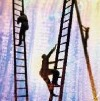

|
|
| Rapor - Makale
> Diðer Konular: |
Ýngilizce-Türkçe teknik terimler sözlüðü (tasarým ve imalat teknolojileri):
Katkýlarýnýzý bekliyoruz: Sözlükteki eksik ve hatalarý lütfen bildiriniz.
Önerdiðiniz uygun deðiþiklikler en kýsa sürede bu sözlüðe eklenecektir... |
 |
Þirketler için hayatta kalmak ve bunu sürekli hale getirebilmek...
Timuçin Bayram, Aralýk 2008, Ýstanbul
Günümüzün amansýz ve kaçýnýlmaz rekabet anlayýþýnda þirketlerin yok olmamak, varlýklarýný devam ettirebilmek için cevabýný aradýðý ve bulmak zorunda olduðu en çetin sorulardan biri, belki de birincisi þudur; Nasýl hayatta kalabilir ve bunu sürekli hale nasýl getirebilirim?.. |
 |
Traktör saha testinin laboratuarda hýzlandýrýlmýþ olarak gerçekleþtirilmesi:
Timuçin Bayram, Mustafa Latif Koyuncu, Uzel Makine San. A.Þ., Haziran 2008, Ýstanbul
Bu çalýþma, traktör saha testlerinin daha hýzlý ve daha az maliyetle nasýl gerçekleþtirilebileceðini araþtýrmak için yapýlmýþtýr. Deðiþik yol ve tarla þartlarýnda traktör üzerinden toplanan verilerin laboratuar ortamýnda yapýlacak teste aktarýlmasý esas alýnmýþtýr... |
 |
Osmanlý okçulukta liderdi (Ýngiliz'lerin Türk okçuluðuna hayranlýðý ve ilgili internet kaynaklarý...):
Erkut Neðiþ, Nisan 2002, Ýstanbul
Osmanlý Devleti gerek okçuluk teknolojisinde, gerekse bunlarý en yüksek performansla etkili bir þekilde kullanabilme yeteneði konusunda bir dünya lideriydi... Bir Ýngiliz okçusunun 1795 yýlýnda yazdýðý mektupta, bir Osmanlý'nýn Ýngiliz okçularýný þaþkýnlaða düþüren ve hayran býrakan uzun menzilli ok atýþlarý anlatýlmaktadýr... |
|
Tarihte, Dünya'da ve Türkiye'de Teknoloji:
Erkut Neðiþ, Uzman,
Gebze Yüksek Teknoloji Enstitüsü, Ekim 1993, Ýstanbul
* Teknoloji tarihi
* Teknoloji ile ilgili kavramlarýn incelenmesi
* Türkiye'de teknoloji |
|
Robotlarýn geliþme dinamikleri:
Arif Ergin, Ocak 2008, Ýstanbul
Ticari ve endüstriyel olmayan robotlar konusunda insanoðlunun ne gibi bir beklenti içinde olduðu çok açýk deðil; Neden satranç oynayan ya da insan gibi yürüyebilen robotlar yapýyoruz?.. |
|
Tasarýmda (konstrüksiyonda) malzeme seçimi:
Emrah Çýnar, Temmuz 2007, Kýrklareli
Malzeme seçimindeki temel amaç, verilen soruna ve duyulan ihtiyacý karþýlamaya yönelik kurgulanan tasarýmý elde edebilmek için belirlenen çalýþma koþullarý altýnda çalýþabilecek en uygun ve olabildiðince en uzun ömürlü malzemeyi seçmektir... |
|
Katý
oksit yakýt pilleri:
Mehmet Emre BAÞ, Bitirme Tezi, 2005, Uludað Üniv. Makine
Müh. Böl., Bursa
Prensip olarak, yakýt pilleri bir pil gibi çalýþýr. Pilden
farklý olarak, yakýt pilleri bitmez yada þarj edilmesine
gerek yoktur. Yakýtla beslendiði sürece elektrik ve ýsý
formunda enerji üretir...
|
|
Manyetik
Yataklar:
Yrd. Doç. Dr. Abdulkadir GÜLLÜ, Gürcan SAMTAÞ, Ankara,
Haziran 2000
Gazi Üniv. Teknik Eðitim Fak., Makine Eðitimi Böl. Talaþlý
Üretim Öðr. son sýnýf öðrencisi
Manyetik yatak tasarýmý, tarihçe, manyetik yatak elemanlarý,
manyetik yataklar nasýl çalýþýr? Avantaj ve dezavantajlarý,
uygulama sahalarý ve örnekleri, yeni araþtýrmalar... |
|
|
|
|
TurkCADCAM.net > Türkiye'nin yeni ürün tasarım, geliştirme, CAD/CAM/CAE, CNC, kalıp ve imalat teknolojileri portalı |
*****
Sektörün profesyonel bilgi ve işbirliği platformu ***** |
|
|
|
|
|
|